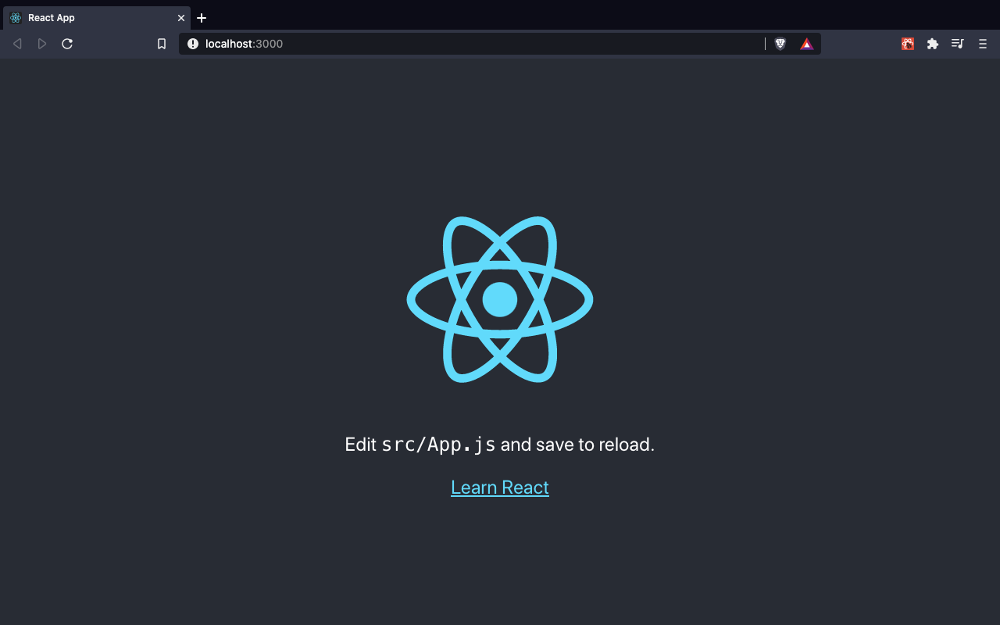
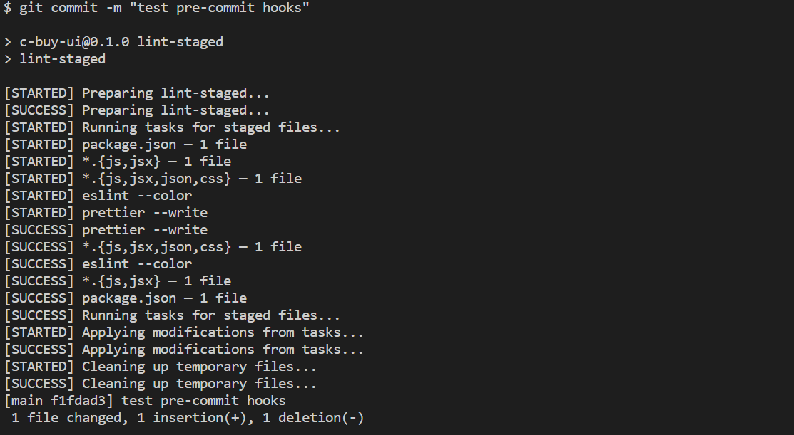
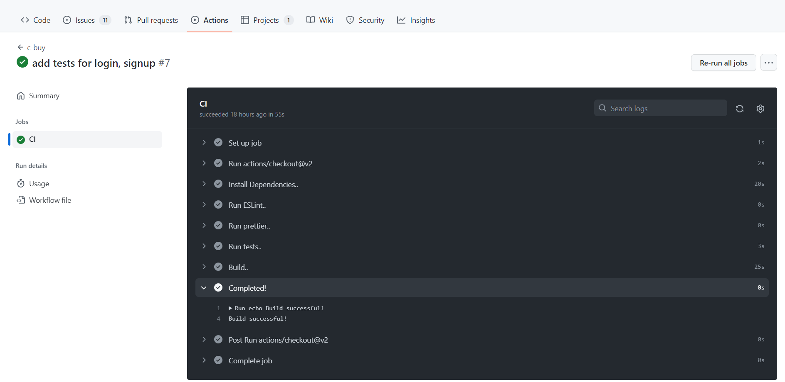

Table of Contents:
Follow these steps to setup a react application and get started. Make sure you have installed node.js
npx create-react-app my-react-app
cd my-react-app
npm start
Then you should see the following in the browser:

React Testing Library: Ensures developers have the setup they need to write basic unit tests. Healthy test coverage helps develop, refactor, and deploy apps with confidence (Comes default with create-react-app)
ESLint: A reliable and highly customizable linter is a must for a robust project setup (Comes default with create-react-app)
Prettier: Ensures your team uses consistent code formatting
npm i prettier --save-dev
create prettierrc.json
touch .prettierrc.json
And paste the following content:
//.prettierrc.json
{
"printWidth": 80,
"trailingComma": "all",
"tabWidth": 2,
"semi": true,
"singleQuote": true,
"arrowParens": "avoid"
}
Add test cases using React Testing library
import { render, screen } from "@testing-library/react";
import { Login } from "../pages/login/Login";
import { MemoryRouter } from "react-router-dom";
import { AuthProvider } from "../context/AuthContext";
import { CartProvider } from "../context/CartContext";
describe("Login Tests", () => {
const renderComp = () =>
render(
<MemoryRouter initialEntries={["/"]}>
<AuthProvider>
<CartProvider>
<Login />
</CartProvider>
</AuthProvider>
</MemoryRouter>
);
test("renders email and password texts", async () => {
renderComp();
expect(await screen.findByText(/Email/i)).toBeInTheDocument();
expect(await screen.findByText(/password/i)).toBeInTheDocument();
});
test("renders Signup link", async () => {
renderComp();
expect(await screen.findByText(/Sign up/i)).toBeInTheDocument();
});
});
npm i husky lint-staged --save-dev
Husky: You can use it to lint your commit messages, run tests, lint code, etc… when you commit or push. Husky supports all Git hooks.
lint-staged: Run linters against staged git files and don't let slip into your code base!
npx husky-init && npm install
that should add a .husky/pre-commit file
paste the following contents to it so that it runs the script when you commit files:
#!/bin/sh
. "$(dirname "$0")/_/husky.sh"
npm run lint-staged # runs lint-staged script from package.json
npm test # runs tests on pre-commit
now go to package.json and add the following
"scripts":{
///..
"lint-staged": "lint-staged",
"prepare": "husky install"
},
"lint-staged": {
"*.{js,jsx}": [
"eslint --color" //run eslint for js/jsx files
],
"*.{js,jsx,json,css}": [
"prettier --write" // run prettier for {js,jsx,json,css} files
]
},
Now commit and see that it works
git add .
git commit -m "Add Pre-commit hooks"

GitHub Actions is a built-in feature on GitHub to run Continuous Integration workflows out of the box
Create a workflow file:
touch ./github/workflows/ci.yml
Paste the following contents:
# This is a basic workflow to help you get started with Actions
name: c-buy
# Controls when the workflow will run
on:
# Triggers the workflow on push or pull request events but only for the main branch
pull_request:
branches: [main]
# Allows you to run this workflow manually from the Actions tab
workflow_dispatch:
# A workflow run is made up of one or more jobs that can run sequentially or in parallel
jobs:
# This workflow contains a single job called "build"
build:
name: CI
# The type of runner that the job will run on
runs-on: ubuntu-latest
# Steps represent a sequence of tasks that will be executed as part of the job
steps:
# Checks-out your repository under $GITHUB_WORKSPACE, so your job can access it
- uses: actions/checkout@v2
# install dependencies
- name: Install Dependencies..
run: npm install
# run linters
- name: Run ESLint..
run: npm run lint
# run code formatters
- name: Run prettier..
run: npm run prettier-fix
- name: Run tests..
run: npm test
# build project
- name: Build..
run: npm run build
# Completed
- name: Completed!
run: echo Build successful!
git add .
git commit -m "Add Continuous Integration"
Now go to GitHub -> Actions to see the output of our CI workflow

By introducing these practices, the code base becomes fully automated and easily maintainable
This blog is a part of a School Project at Stevens Institute of Technology